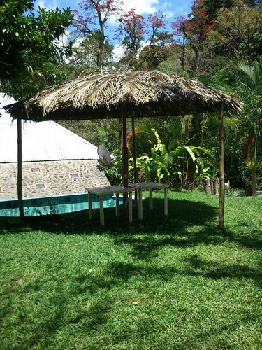
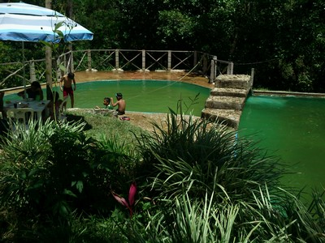
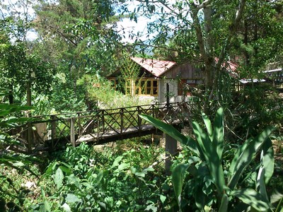
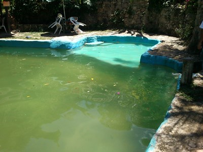
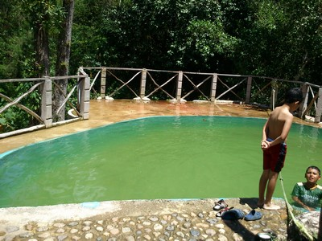

Albercas que son tomadas naturalmente del rio Azufre, el cual nace de la montaña abkabalna el agua es Fria y refrescante.
Un sitio donde la diversion y el entretenimiento sano se encuentran cuenta con una pequeña cascada que baña una cabaña, cuenta con restaurant y palapas.
Se localiza en el Municipio de Yajalón, del lado Oriente Sur, en el barrio San José.
Puede irse por el Boulevar Dominguez, luego se desvia hacia el barrio San José, avanzá 5 km, y encontrará el balneario.
En el lugar usted puede practicar actividades de esparcimientos como:
---Balneario---
---Fotografía---
---Contemplación de paisaje---





Posicione el mouse sobre las imágenes